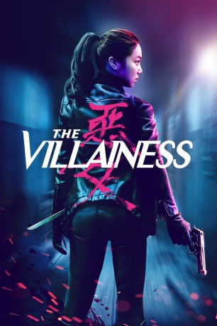

#7951 The Villainess
 gesehen am 07.01.2018
gesehen am 07.01.2018
 
 IMDB-Wertung: 6.7 / 10
IMDB-Wertung: 6.7 / 10  Metascore: 64
Metascore: 64 
Als Tochter eines Gangsters hat Sook-hee früh gelernt, Feinde aus dem Weg zu räumen. Nachdem sie eine komplette gegnerische Bande im Alleingang niedermetzelt und im Gefängnis landet, wird eine geheime Regierungsbehörde auf die Einzelgängerin aufmerksam, die junge Frau wird zwangsweise zur Profikillerin ausgebildet. Der nicht verhandelbare Deal: "Du tötest zehn Jahre lang jeden, den wir dir auf die Abschussliste setzen, dann lassen wir dich frei."
Jahr: 2017
Dauer: 123 Minuten
FSK: 18
Land: Süd-Korea Studio: Splendid FilmTonspuren: DTS - ,
Untertitel: Deutsch,
Auflösung: 1080p (1920x808) Größe: 6195 MB
Genre: Action, Thriller, Drama, Krimi
Regisseur: Byung-gil Jung
Drehbuch: Byeong-sik Jung
Soundtrack: Ja wan Koo
Darsteller:
- Ok-bin Kim als Sook-hee
 Ha-kyun Shin als Joong-sang
Ha-kyun Shin als Joong-sang- Jun Sung als Hyun-soo
- Seo-hyeong Kim als Chief Kwon
 Cheol-min Park als Sook-Hee's father
Cheol-min Park als Sook-Hee's father- Eun-ji Jo als Kim Seon
- Ye-Ji Min als Sook-hee (young)
- Hae-Kyun Jung als Jang-Chun
- Yun-Woo Kim als Eun-Hye
- Seung-Joo Lee als Choon-Mo
- Min-Ji Son als Min-Joo
Datei: X:\FSK18-Eastern\Villainess, The (2017, FSK18, 1920x808).mkv seit 07.01.2018
Festplatte: FSK18
 Es gibt insgesamt 102 Filme in der Gruppe 'FSK18-Eastern'
Es gibt insgesamt 102 Filme in der Gruppe 'FSK18-Eastern'